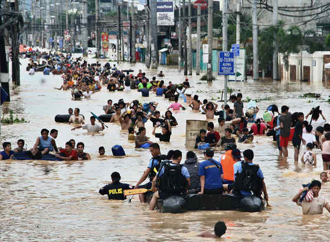
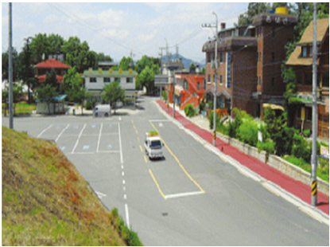

What is Flood?
A flood is an overflow of water that submerges land that is usually dry. Floods can result from various causes, including heavy rainfall, river overflow, dam breaks, rapid snowmelt, or coastal storm surges. They can cause significant damage to property, infrastructure, and can pose serious risks to human safety.
How to Survive a Flood?
To survive a flood, escape to higher land as soon as you are advised or see rising water levels. Avoid walking or driving through flooded regions, since they may conceal hazards. During the flood disaster, be informed by following official channels for updates and directions.
How to Prepare for a Flood?
Consider these steps before, during, and after a Flood:
Before a Flood
- Stay informed by using trusted sources.
- Create a flood emergency plan, including evacuation routes.
- Create an emergency kit including necessary materials.
- Elevating appliances and putting up obstacles will help to secure your property.
During a Flood
- Evacuation orders should be followed swiftly.
- Move to higher ground or upper levels if required.
- Avoid floodwaters, since they might be dangerous.
- Stay informed with local news and notifications.
After a Flood
- Wait until officials declare it safe to return.
- Inspect the property for damage and document it.
- Be wary of risks such as downed electrical wires.
- Contact your insurance provider and begin the cleanup process safely.